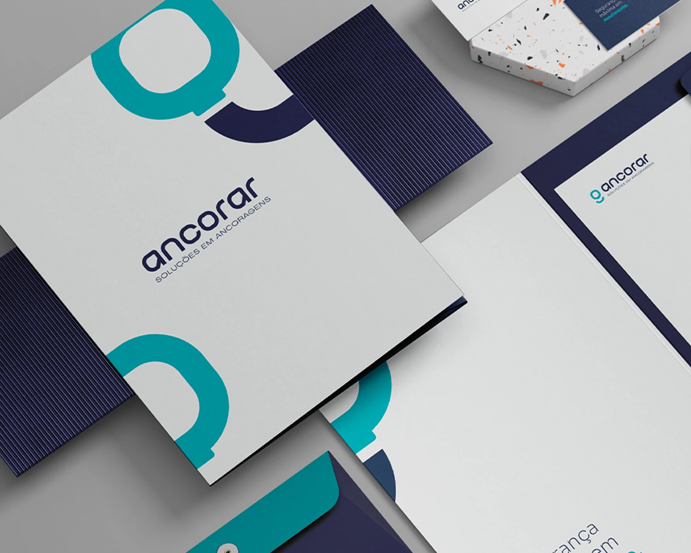
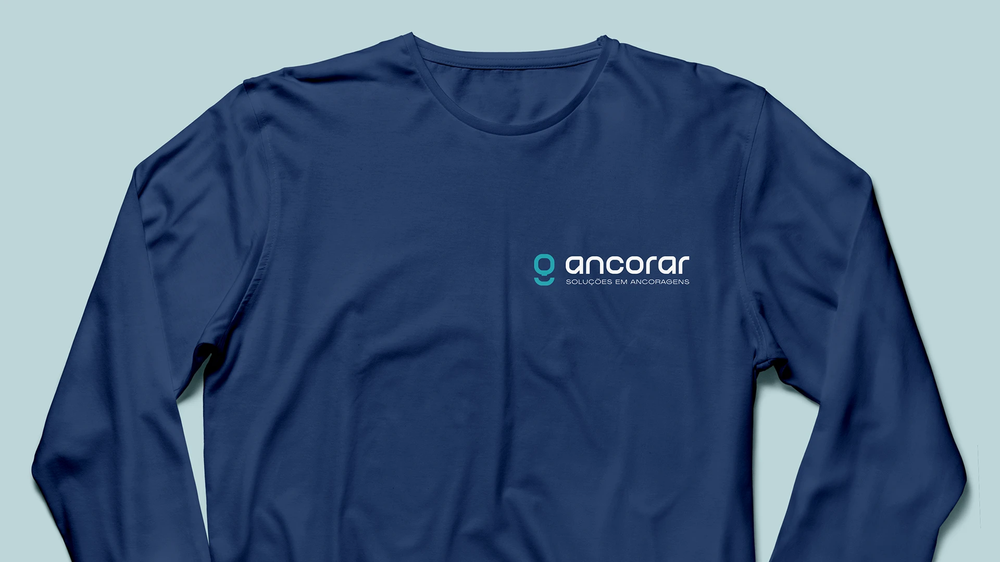
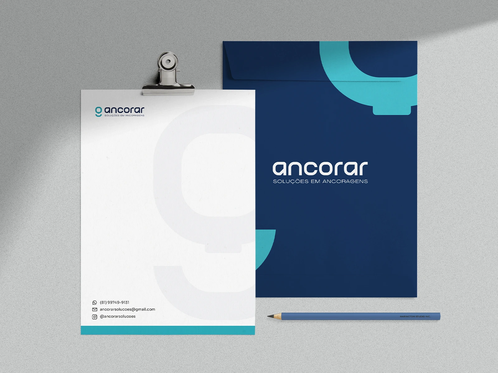
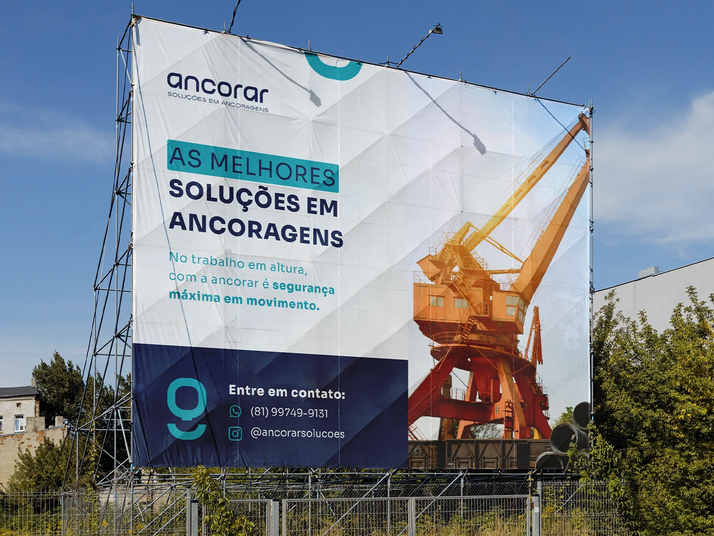
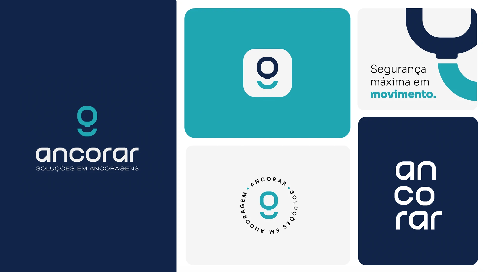
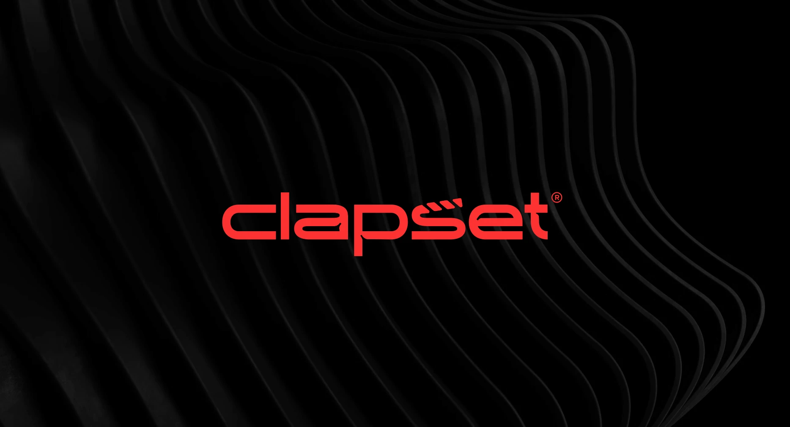

Contexto
Sobre a marca
A Ancorar é uma empresa especializada em soluções para ancoragens, oferecendo produtos e serviços voltados à segurança em trabalhos em altura, incluindo instalação e inspeção de pontos de ancoragem. Com uma atuação pautada na qualidade, precisão e confiabilidade, a marca entende que seu papel vai além de fornecer soluções técnicas: é contribuir para a proteção de vidas e proporcionar mais confiança aos profissionais e empresas que dependem desses sistemas diariamente.
O desafio
O que a marca precisava comunicar
O principal desafio foi construir uma identidade visual capaz de traduzir a seriedade e a responsabilidade de um segmento em que a segurança é indispensável, sem abrir mão da modernidade e da proximidade com o público. O símbolo, inspirado em um olhal de ancoragem, estabelece uma conexão direta com o universo da marca, enquanto as formas minimalistas, a tipografia contemporânea e a paleta de cores reforçam atributos como confiança, inovação e profissionalismo.
O resultado é uma identidade que transforma a essência técnica da Ancorar em uma presença visual forte, reconhecível e estratégica.
Mockups e aplicações




Próximo projeto
Clapset Produtora
Produtora de Reality Show · Identidade visual

O próximo capítulo começa aqui